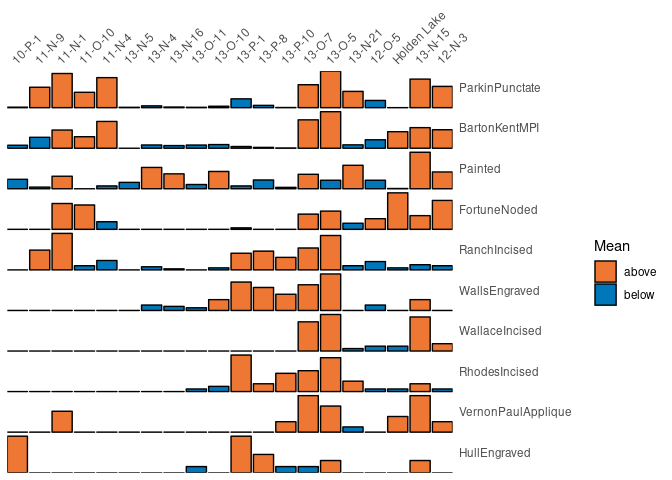
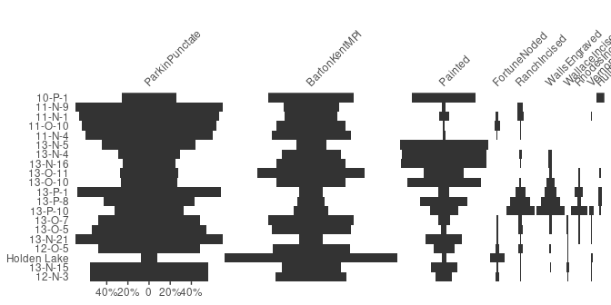
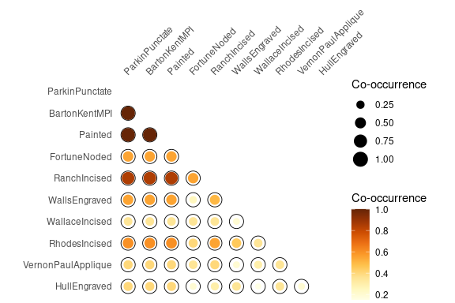
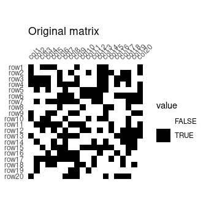
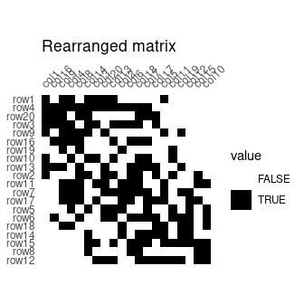
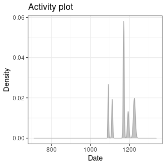
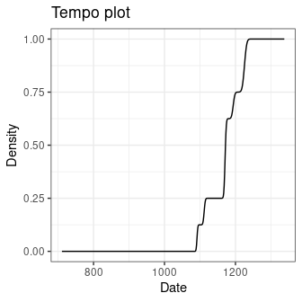
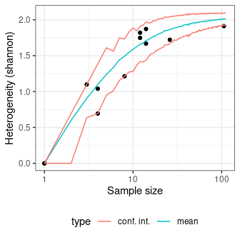
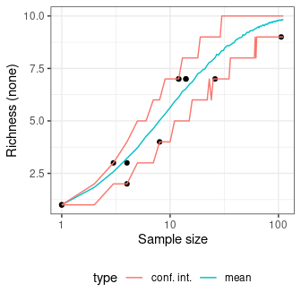
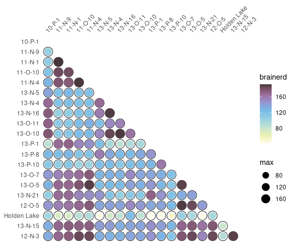

Overview
An easy way to examine archaeological count data. tabula provides a convenient and reproducible toolkit for relative and absolute dating and analysis of (chronological) patterns. It includes functions for matrix seriation (reciprocal ranking, CA-based seriation), chronological modeling and dating of archaeological assemblages and/or objects. Beyond these, the package provides several tests and measures of diversity: heterogeneity and evenness (Brillouin, Shannon, Simpson, etc.), richness and rarefaction (Chao1, Chao2, ACE, ICE, etc.), turnover and similarity (Brainerd-Robinson, etc.). The package make it easy to visualize count data and statistical thresholds: rank vs. abundance plots, heatmaps, Ford (1962) and Bertin (1977) diagrams.
To cite tabula in publications please use:
Frerebeau, N. (2019). tabula: An R Package for Analysis, Seriation, and Visualization of Archaeological Count Data. Journal of Open Source Software, 4(44), 1821. DOI 10.21105/joss.01821.
Installation
You can install the released version of tabula from CRAN with:
install.packages("tabula")And the development version from GitHub with:
# install.packages("remotes")
remotes::install_github("tesselle/tabula")Usage
## Load packages
library(tabula)
library(folio) # Datasets
library(khroma) # Color scales
library(ggplot2)
library(magrittr)tabula uses a set of S4 classes that represent different special types of matrix. Please refer to the documentation of the arkhe package where these classes are defined.
It assumes that you keep your data tidy: each variable (type/taxa) must be saved in its own column and each observation (sample/case) must be saved in its own row.
Visualization
Several types of graphs are available in tabula which uses ggplot2 for plotting informations. This makes it easy to customize diagrams (e.g. using themes and scales).
Bertin or Ford (battleship curve) diagrams can be plotted, with statistic threshold (including B. Desachy’s sériographe).
## Bertin matrix with variables scaled to 0-1 and the variable mean as threshold
scale_01 <- function(x) (x - min(x)) / (max(x) - min(x))
mississippi %>%
as_count() %>%
plot_bertin(threshold = mean, scale = scale_01) +
ggplot2::labs(fill = "Mean") +
khroma::scale_fill_vibrant()

Spot matrix[1] allows direct examination of data:
## Plot co-occurrence of types
## (i.e. how many times (percent) each pairs of taxa occur together
## in at least one sample.)
mississippi %>%
as_occurrence() %>%
plot_spot() +
ggplot2::labs(size = "Co-occurrence", colour = "Co-occurrence") +
khroma::scale_colour_YlOrBr()
Seriation
## Build an incidence matrix with random data
set.seed(12345)
binary <- sample(0:1, 400, TRUE, c(0.6, 0.4))
incidence <- IncidenceMatrix(data = binary, nrow = 20)
## Get seriation order on rows and columns
## Correspondance analysis-based seriation
(indices <- seriate_rank(incidence, margin = c(1, 2)))
#> <PermutationOrder: reciprocal ranking>
#> Permutation order for matrix seriation:
#> - Row order: 1 4 20 3 9 16 19 10 13 2 11 7 17 5 6 18 14 15 8 12...
#> - Column order: 1 16 9 4 8 14 3 20 13 2 6 18 7 17 5 11 19 12 15 10...
## Permute matrix rows and columns
incidence2 <- permute(incidence, indices)
## Plot matrix
plot_heatmap(incidence) +
ggplot2::labs(title = "Original matrix") +
ggplot2::scale_fill_manual(values = c("TRUE" = "black", "FALSE" = "white"))
plot_heatmap(incidence2) +
ggplot2::labs(title = "Rearranged matrix") +
ggplot2::scale_fill_manual(values = c("TRUE" = "black", "FALSE" = "white"))
Dating
This package provides an implementation of the chronological modeling method developed by Bellanger and Husi (2012). This method is slightly modified here and allows the construction of different probability density curves of archaeological assemblage dates (event, activity and tempo). Note that this implementation is experimental (see vignette("dating")).
## Coerce dataset to abundance (count) matrix
zuni_counts <- as_count(zuni)
## Assume that some assemblages are reliably dated (this is NOT a real example)
## The names of the vector entries must match the names of the assemblages
zuni_dates <- c(
LZ0569 = 1097, LZ0279 = 1119, CS16 = 1328, LZ0066 = 1111,
LZ0852 = 1216, LZ1209 = 1251, CS144 = 1262, LZ0563 = 1206,
LZ0329 = 1076, LZ0005Q = 859, LZ0322 = 1109, LZ0067 = 863,
LZ0578 = 1180, LZ0227 = 1104, LZ0610 = 1074
)
## Model the event date for each assemblage
event <- date_event(zuni_counts, dates = zuni_dates, cutoff = 90)
## Plot activity and tempo distributions
plot_date(event, type = "activity", select = "LZ1105") +
ggplot2::labs(title = "Activity plot") +
ggplot2::theme_bw()
plot_date(event, type = "tempo", select = "LZ1105") +
ggplot2::labs(title = "Tempo plot") +
ggplot2::theme_bw()
Diversity
Diversity can be measured according to several indices (referred to as indices of heterogeneity – see vignette("diversity")). Corresponding evenness (i.e. a measure of how evenly individuals are distributed across the sample) can also be computed, as well as richness and rarefaction.
mississippi %>%
as_count() %>%
index_heterogeneity(method = "shannon")
#> <HeterogeneityIndex: shannon>
#> size index
#> 10-P-1 153 1.2027955
#> 11-N-9 758 0.7646565
#> 11-N-1 1303 0.9293974
#> 11-O-10 638 0.8228576
#> 11-N-4 1266 0.7901428
#> 13-N-5 79 0.9998430
#> 13-N-4 241 1.2051989
#> 13-N-16 171 1.1776226
#> 13-O-11 128 1.1533432
#> 13-O-10 226 1.2884172
#> 13-P-1 360 1.1725355
#> 13-P-8 192 1.5296294
#> 13-P-10 91 1.7952443
#> 13-O-7 1233 1.1627477
#> 13-O-5 1709 1.0718463
#> 13-N-21 614 0.9205717
#> 12-O-5 424 1.1751002
#> Holden Lake 360 0.7307620
#> 13-N-15 1300 1.1270126
#> 12-N-3 983 1.0270291
## Data from Conkey 1980, Kintigh 1989, p. 28
chevelon <- as_count(chevelon)
sim_evenness <- simulate_evenness(chevelon, method = "shannon")
plot(sim_evenness) +
ggplot2::theme_bw()
sim_richness <- simulate_richness(chevelon, method = "none")
plot(sim_richness) +
ggplot2::theme_bw()
Several methods can be used to ascertain the degree of turnover in taxa composition along a gradient on qualitative (presence/absence) data. It assumes that the order of the matrix rows (from 1 to n) follows the progression along the gradient/transect.
Diversity can also be measured by addressing similarity between pairs of sites:
## Calculate the Brainerd-Robinson index
## Plot the similarity matrix
mississippi %>%
as_count() %>%
similarity(method = "brainerd") %>%
plot_spot() +
khroma::scale_colour_iridescent()
Contributing
Please note that the tabula project is released with a Contributor Code of Conduct. By contributing to this project, you agree to abide by its terms.
[1] Adapted from Dan Gopstein’s original idea.